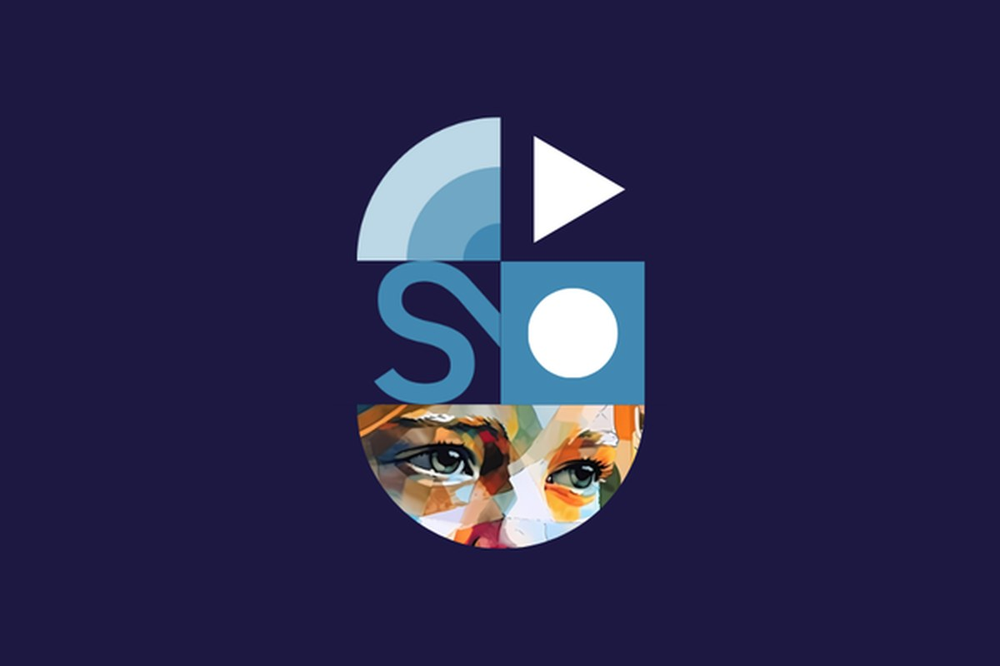
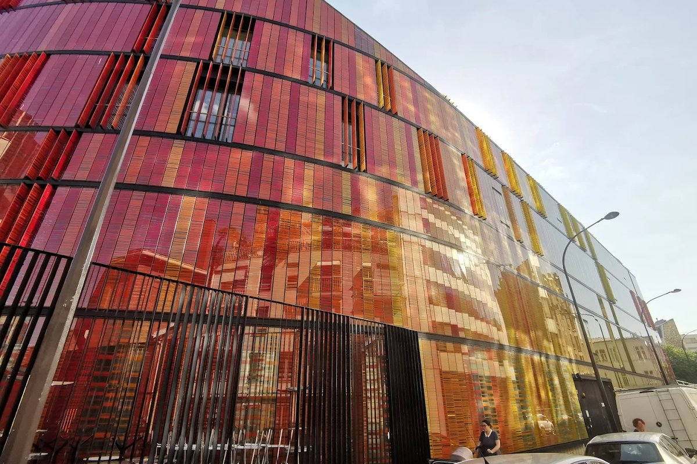

Initiatives
The group convenes events, workshops, and publications that bring
together scholars and practitioners working on corporate purpose across
Europe.

Event · Paris
Purpose Day Paris
The HEC Paris S&O Purpose Center's annual Purpose Day, held with
the University of Oxford Centre for Corporate Reputation, bringing
scholars together with business leaders. Its 4th edition (2026),
"Purpose & Profit: after the backlash, what remains?", paired research
and practice insights with an Oxford Union–style debate.
 Event · Milano
Event · Milano
Purpose Day Milano
POLIMI Graduate School of Management's Purpose Day — a distinct annual
event. Its 2026 edition, "Driving Technology to Shape Meaningful Futures,"
gathers scholars, leaders, and partners at the Teatro Lirico Giorgio
Gaber in Milano.

Academic workshop
Bella Purpose Research Day
The group's own research workshop, where members and the wider
community present and receive developmental feedback on work-in-progress
papers in a collegial setting. The first edition was held at ESCP
Business School in Paris in 2026.
Conference · EURAM
EURAM purpose track
Members convene a purpose-focused track at the European Academy of
Management (EURAM), run jointly by the Strategic Management and Corporate
Governance divisions — a growing home for purpose research at the
conference.
 Forum · SMS
Forum · SMS
Strategy Imagination Forum (SMS)
The group's first Strategic Management Society (SMS) forum: the
Strategy Imagination Forum in Berlin (2026), a candid, invitation-only
exchange between senior decision-makers and scholars on corporate purpose
in a fragmented world.
Publications
A shared European voice
The group is developing a series of publications that articulate a
pluralist, European perspective on corporate purpose — including
purpose understood as a governance function.